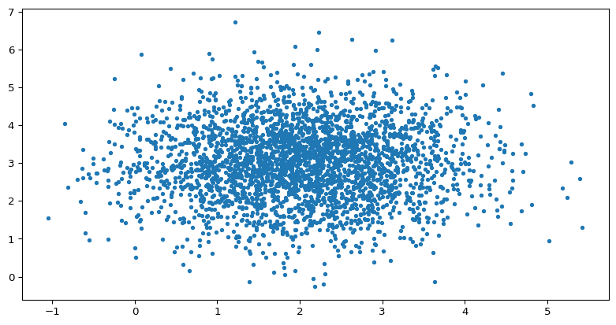
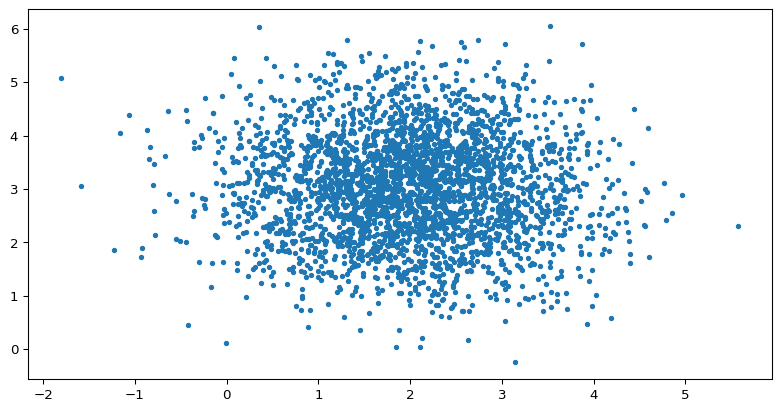

08wk-1: 진실의 세계와 데이터의 세계 (Python, 참고자료)
강의영상
- 본 강의노트로는 강의를 하지 않음.
도입
예제1 – 엑스노트

reference: 201x년 김용대 교수님 수업을 들으며 착안한 예제..
앞의 그림을 가장 적절히 설명한 진술이 무엇이라고 생각하는가?
- 신민아가 고층빌딩에서 엑스노트를 벽면유리에 테잎을 붙여 프리젠테이션을 하고 있다.
- 젋은여성이 노트북을 활용하여 프리젠테이션을 하고 있다.
- 여성이 프리젠테이션을 하고 있다.
이제 아래의 진술이 맞을 “확률”을 생각해보자. 1,2,3중에 어떠한 문장이 참일 확률이 가장 높은가?
- 신민아가 고층빌딩에서 엑스노트를 활용해 프리젠테이션을 하고 있다.
- 젋은여성이 노트북을 활용하여 프리젠테이션을 하고 있다.
- 여성이 프리젠테이션을 하고 있다.
예제2 – 아래의 그림을 관찰하자.
다음 중 그림을 가장 잘 묘사한 것은?
- \(x\)축의 평균은 2이다.
- \(y\)축의 평균은 3이다.
- 평균은 \((2,3)\)이다.
- 평균은 어딘가에 있다. 즉 평균은 \((x_0,y_0)\) 인데 \(x_0 \in \mathbb{R}, y_0 \in \mathbb{R}\).
진술 1-4가 맞을 확률은?
왜 이러한 혼란이 생기는가? 피셔는 1922년 그의 논문 “On the Mathematical Foundations of Theoretical Statistics”에서 혼란이 발생하는 원인을 아래와 같이 주장하였다.
- 용어가 불분명해서 그렇다. (즉 순전히 언어적인 혼란이다)
- “확률”이라는 개념을 너무 남발해서 그렇다. (역확률)
모수 vs 추정치
용어가 불분명하다는 것이 무슨 의미일까?
예제1 – 애매한 언어
질문1: 공평한 동전을 던진다고 가정하자. 동전을 던저서 나오는 앞면이 나오면 \(X=0\)이라고 하고 뒷면이 나오면 \(X=1\)이라고 하자. \(X\)의 평균은 얼마인가?
질문2: 동전을 5번 던져서 \((0,1,0,0,1)\)을 얻었다고 하자. 평균이 얼마인가?
- 사람들은 알고 싶지만 오직 추정만 할 수 있는 참값(모수)과 추정 방법을 통해 도출된 값(추정치) 모두에 대해 같은 이름을 사용하는 관습이 있다.
| 구분 | 진실의 세계 | 데이터의 세계 |
|---|---|---|
| 성격 | 알고 싶지만 오직 추정만 할 수 있는 참값 (true value) | 추정 방법을 통해 도출된 특정 값 (particular value at which we happen to arrive) |
| 용어 | 모수 (parameter) | 추정치 (estimate) |
| 평균 | 모평균 \(\mu\) | 표본평균 \(\bar{x}\) |
| 표준편차 | 모표준편차 \(\sigma\) | 표본표준편차 \(s\) |
고등학교 과정 복습
- 베르누이 시행 (Bernoulli Trial)
- 결과가 “성공(1)” 또는 “실패(0)” 두 가지만 나오는 실험
- 성공 확률을 \(p\)라고 하면, 실패 확률은 \(1-p\)
- 예: 동전 던지기 (앞면=성공, 뒷면=실패), 제품 검사 (양품=성공, 불량품=실패)
- 확률변수 (Random Variable)
- 확률 실험의 결과를 숫자로 대응시키는 함수
- 베르누이 시행에서: \(X = 1\) (성공), \(X = 0\) (실패)
- 확률변수 \(X\)가 베르누이 분포를 따른다는 표기: \(X \sim \text{Bernoulli}(p)\) 또는 \(X \sim B(p)\)
- 독립 (Independence)
- 두 확률변수 \(X_1, X_2\)가 독립: 한 변수의 결과가 다른 변수에 영향을 주지 않음
- 수학적 정의: \(P(X_1=x_1, X_2=x_2) = P(X_1=x_1) \cdot P(X_2=x_2)\)
- 예: 첫 번째 동전 던지기 결과가 두 번째 동전 던지기에 영향을 주지 않음
- i.i.d. (independent and identically distributed)
- 독립 (independent): 확률변수들이 서로 독립
- 동일한 분포 (identically distributed): 모든 확률변수가 같은 분포를 따름
- 표기: \(X_1, X_2, \ldots, X_n \overset{iid}{\sim} \text{Bernoulli}(p)\)
- 의미: \(n\)개의 확률변수가 모두 베르누이\((p)\)를 따르며, 서로 독립적임
- 모평균 (Population Mean)
- 확률변수 \(X\)의 기댓값 (expected value)
- 표기: \(\mu = \mathbb{E}[X]\)
- 의미: 진실의 세계에서 이론적으로 계산되는 평균값
- 베르누이 분포의 경우: \(\mu = \mathbb{E}(X) = p\)
- 실현치 (Realization) – data
- 확률변수를 (실험 혹은 시뮬레이션을 통해) 관측하여 얻은 구체적인 실제값
- 표기: \(x_1, x_2, \dots, x_n\) (소문자)
- 예: 동전을 5번 던져서 \((0,1,0,0,1)\)을 얻음
- 표본평균 (Sample Mean)
- 관측치들의 산술평균
- 표기: \(\bar{x} = \frac{1}{n}\sum_{i=1}^{n}x_i\) (소문자)
- 의미: 데이터의 세계에서 실제로 계산되는 평균값
- 예: \((0,1,0,0,1)\)의 표본평균은 \(\bar{x} = \frac{0+1+0+0+1}{5} = 0.4\)
예제1 – 명확한 언어
질문1: \(p=0.5\)인 베르누이 시행을 상상하자.1 \(X\sim B(p)\) 일때 모평균 \(\mathbb{E}(X)\)는 얼마인가?2
질문2: \(X_1,\dots,X_5 \overset{i.i.d.}{\sim}B(0.5)\)의 관측값이 \[(x_1,x_2,x_3,x_4,x_5)=(0,1,0,0,1)\]일때 표본평균 \(\bar{x}=\frac{1}{5}\sum_{i=1}^{5}x_i\)는 얼마인가?
예제2 – 애매한 언어
평균이 0이고 표준편차가 1이 정규분포가 있다고 하자. 아래는 이러한 정규분포에 10개의 data를 뽑은 결과이다.
np.random.seed(123)
x = np.random.normal(size=10)
xarray([-1.0856306 , 0.99734545, 0.2829785 , -1.50629471, -0.57860025,
1.65143654, -2.42667924, -0.42891263, 1.26593626, -0.8667404 ])x의 평균은 아래와 같은 코드로 계산한다.
np.mean(x).item()-0.26951611032632805x의 표준편차는 아래와 같이 계산한다.
np.std(x).item()1.236304801499023만약에 정규분포에서 10개의 데이터가 아니라 더 많은 data를 얻는다면 어떻게 될까?
np.random.seed(123)
x = np.random.normal(size=10000)
np.mean(x).item(), np.std(x).item()(0.009711892291595955, 0.9981138545901475)평균은 점점 평균에 가까워 질 것이고, 표준편차는 점점 표준편차에 가까워질 것이다. (뭐라는거야..??)
Note
아래의 표에서 ???의 값을 채워보자.
| 진실의 세계 | 데이터의 세계 |
|---|---|
| 모평균 \(\mu=???\) | 표본평균 \(\bar{x}=???\) |
| 모표준편차 \(\sigma=???\) | 표본표준편차 \(s=???\) |
예제3 – 베르누이
아래의 상황을 가정하자.
\[X_1,X_2,X_3 \overset{i.i.d.}{\sim} B(0.5)\]
이로부터 데이터를 아래와 같이 얻었다고 하자.
np.random.seed(1234)
x = np.random.binomial(n=1, p=0.5, size=3)| 진실세계의 정보 | 데이터세계의 정보 |
|---|---|
| \(X_1,X_2,X_3 \overset{i.i.d.}{\sim} B(0.5)\) | \(x_1,x_2,x_3 = (0,1,0)\) |
예제4 – 이변량 정규분포
이제 \(n=3000\)에 대해서 아래의 상황을 생각하자.
- \(X_1,\dots,X_n \overset{i.i.d}{\sim} N(2,1)\)
- \(Y_1,\dots,Y_n \overset{i.i.d}{\sim} N(3,1)\)
- \(X_i \perp Y_j,\quad \forall i,j \in \{1,2,\dots,n\}\)
그리고 아래의 코드를 활용하여 데이터를 얻었다.
np.random.seed(123)
x = np.random.normal(loc=2, scale=1, size=3000)
y = np.random.normal(loc=3, scale=1, size=3000)
plt.plot(x, y, '.')
이 경우 진실의 세계와 데이터의 세계는 아래와 같이 생각할 수 있다.

- 통찰1: 진실의 세계에서 데이터의 세계로 넘어가기 위해서는 관측이 필요하다.
- 통찰2: 진실의 세계에서 데이터의 세계로 넘어갈때만 “확률”이라는 개념이 적용된다. 즉 확률은 반드시 아래와 같은 개념으로만 사용되어야 한다.3
\[\text{진실의 세계} \overset{P}{\Longrightarrow} \text{데이터의 세계}\]
- 통찰3: 데이터의 세계는 반복 관찰 가능하다.
예제4 – 동전던지기
| 진실세계의 정보 | 데이터세계의 정보 |
|---|---|
| \(X_1,X_2,X_3 \overset{i.i.d.}{\sim} B(0.5)\) | \(x_1,x_2,x_3 = (0,1,0)\) |
- 통찰1: 진실세계의 정보에서 데이터세계의 정보를 얻기 위해서는 반드시 관측이 필요하다.
- 통찰2: 진실세계의 정보에서 데이터세계의 정보는 확률적으로 얻어진다. (주어진 예시에서는 1/8의 확률로 얻어짐)
- 통찰3: 데이터세계의 정보는 (관측행위를 되풀이하여) 반복측정 가능하다.
- 예를들어 관측행위를 되풀이하여 \((x_1,x_2,x_3)=(0,0,0)\) 을 얻을수도 있고
- \((x_1,x_2,x_3)=(0,1,1)\) 을 얻을수도 있음.
예제5 – 신민아 배우님..

- 통찰1: 진실세계의 정보에서 데이터세계의 정보를 얻기 위해서는 관측이 필요
- 통찰2: 진실세계의 정보에서 데이터세계의 정보는 확률적으로 얻어짐
- 통찰3: 데이터세계의 정보는 반복측정 가능